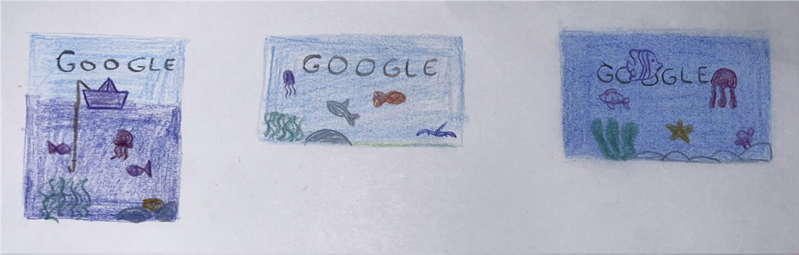

Een Google Doodle is een speciale, tijdelijke wijziging van het logo van Google op de startpagina van de zoekmachine. Deze doodles worden vaak gemaakt ter gelegenheid van feestdagen, belangrijke gebeurtenissen of ter ere van opmerkelijke personen.
Ontwerp een Google Doodle voor een specifieke gelegenheid, gebeurtenis of persoon naar keuze. Het doel is om creatief te zijn en een visueel aantrekkelijke doodle te maken die de aandacht van gebruikers trekt en hen aanmoedigt om meer te weten te komen over het onderwerp.
Ik heb voor World Oceans Day gekozen omdat ik de zee en oceaan altijd al heel fascinerend heb gevonden. Er is nog zoveel dat we niet weten over wat zich onder het wateroppervlak afspeelt. Ook de dieren die in de oceaan leven, zoals dolfijnen, vind ik erg mooi en interessant.
Ik begon het proces met het maken van concepttekeningen om de stijl en sfeer van de Google Doodle te verkennen. In deze schetsen experimenteerde ik met kleur, compositie en verschillende onderwaterelementen zoals vissen, kwallen en zeewier. Zo kon ik onderzoeken hoe de letters van “Google” op een natuurlijke manier in het onderwaterthema konden opgaan en de juiste uitstraling kregen.
